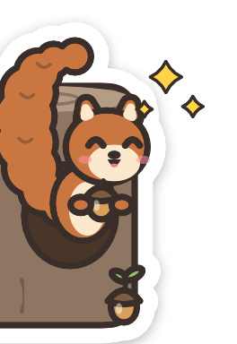
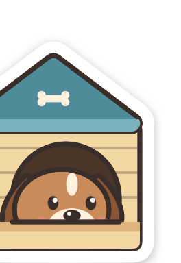
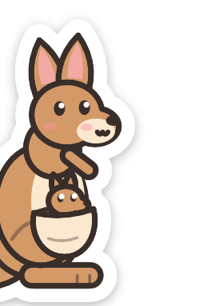

Deixe com o gato. Volte a buscá-lo depois.
O PawShelf é uma prateleira para o seu Mac. Uma pequena personagem espreita da margem do ecrã e guarda ficheiros, pastas, imagens, ligações e texto enquanto muda de app.
Brevemente na Mac App Store
Para macOS 14 ou posterior, em Macs com Apple silicon e Intel.
Como funciona

Largue no separador
Arraste o que quiser para a personagem na margem do ecrã. Está longe da margem? Abane o cursor enquanto arrasta e a prateleira abre mesmo ao lado.

Continue a trabalhar
Mude de app, de Space ou de janela em ecrã completo. O separador fica na margem e os seus elementos continuam lá depois de reiniciar.

Arraste para fora
Largue os elementos no Finder, no Mail, num chat ou num formulário de carregamento. Selecione vários para os arrastar em conjunto.
Escolha quem guarda as suas coisas
Doze personagens, cada uma com a sua maneira de guardar as coisas. Alguns hábitos fazem trabalho a sério: as bochechas do hamster mostram quão cheia está a prateleira, o esquilo avisa-o dos elementos esquecidos e o gelo do pinguim derrete os elementos de que já não precisa.
-


Gato Caixinha
Esconde as suas coisas numa caixa de cartão
-


Hamster Bochechudo
As bochechas incham à medida que a prateleira enche
-


Esquilo Bolota
Lembra-se das bolotas esquecidas e sugere uma arrumação
-


Pinguim Frigorífico
Guarda as coisas no gelo até derreterem
-


Coruja Noturna
Bem acordada à noite, ensonada de dia
-


Pega Brilhante
Coleciona ligações e imagens brilhantes
-


Cão Buscador
Vai buscar as suas coisas quando precisa delas
-


Canguru de Bolso
Guarda as coisas em segurança na sua bolsa
-


Pelicano
Abre o seu grande bico para apanhar o que largar
-


Polvo Oito Braços
Segura uma coisa em cada braço
-


Toupeira Escavadora
Guarda as coisas na sua toca
-


Tartaruga Carapaça
Protege as coisas debaixo da carapaça
Passe o ponteiro sobre um autocolante para dizer olá.
Tudo o que uma prateleira deve fazer
Histórico da área de transferência
As suas últimas 50 cópias ficam na prateleira. As cópias que os gestores de palavras-passe marcam como privadas nunca são registadas.
Recolher ficheiros novos
Escolha uma pasta como Capturas de ecrã ou Transferências, e os ficheiros novos aparecem sozinhos na prateleira.
Pesquisar dentro de imagens
Encontre uma captura de ecrã pelas palavras que contém. O texto é reconhecido no seu Mac.
Títulos e ícones das ligações
As ligações mostram o título e o ícone da página, não apenas um endereço.
Removidos recentemente
Removeu algo por engano? Recupere-o no menu ⋯ da prateleira.
Pré-visualizar e partilhar
Prima a barra de espaço para a Visualização rápida ou envie elementos por AirDrop e Mensagens.
Coleções
Agrupe elementos relacionados em coleções e mostre uma de cada vez.
Em todos os Spaces
O separador acompanha-o em todos os Spaces e fica por cima das apps em ecrã completo, na margem esquerda ou direita.
Pronto para o VoiceOver
Cada botão e elemento da prateleira tem uma etiqueta do VoiceOver.
Nada para autorizar nas Definições do Sistema
O PawShelf não pede permissão de Acessibilidade nem de Gravação do ecrã. Funciona na App Sandbox e só abre o que lhe entrega. O que coloca na prateleira fica no seu Mac.